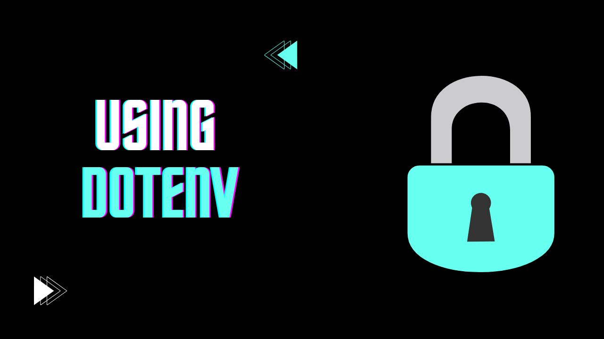

Environment variables are crucial in programming for storing sensitive information, such as API keys, database credentials, or any configuration details that should not be hard-coded into your source code. Using a .env file with dotenv allows you to keep these variables outside of your codebase, making your application more secure and flexible.
What is Dotenv?
dotenv is a popular package that loads environment variables from a .env file into your application’s environment. This package can be used in various programming environments but is especially common in Node.js and Python projects.
Setting Up Dotenv
1. Install Dotenv
In Node.js or Python, you can install dotenv as follows:
Node.js: Run the following command in your terminal.
npm install dotenvPython: Install using
pip.pip install python-dotenv
2. Create a .env File
In the root directory of your project, create a file named .env. Inside this file, define your environment variables using key-value pairs. For example:
API_KEY=your_api_key_here
DB_HOST=localhost
DB_USER=user
DB_PASS=secret_passwordRemember:
- No spaces around the
=. - Add this file to your
.gitignoreto keep it from being pushed to version control.
3. Load Environment Variables in Your Application
Here’s how to load these variables in Node.js and Python.
Node.js: Add the following at the beginning of your main file (e.g.,
app.jsorindex.js).require("dotenv").config(); // Now you can access the environment variables console.log(process.env.API_KEY);Python: Load the environment variables at the top of your script.
from dotenv import load_dotenv import os load_dotenv() # Now you can access the environment variables api_key = os.getenv("API_KEY") print(api_key)
Why Use Dotenv?
- Security: Sensitive data is kept out of the codebase.
- Portability: You can use different
.envfiles for different environments (e.g., development, testing, production). - Convenience: It simplifies configuration management across different environments.
Best Practices
- Never Commit
.envFiles: Use.gitignoreto keep.envout of your version control. - Use Environment Variables for Secrets Only: Avoid storing non-sensitive data, like configuration that is unlikely to change, in
.env. - Create a
.env.exampleFile: This file should contain all the variable names without values, helping other developers see which variables are needed.